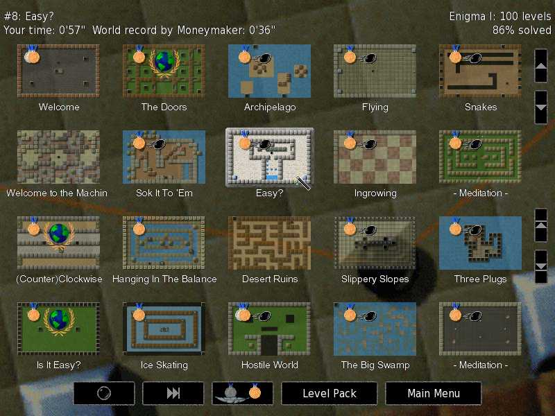
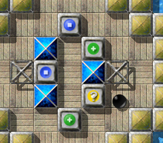
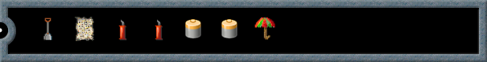
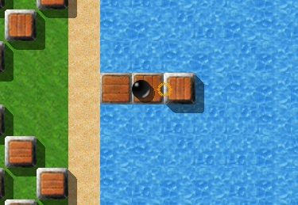
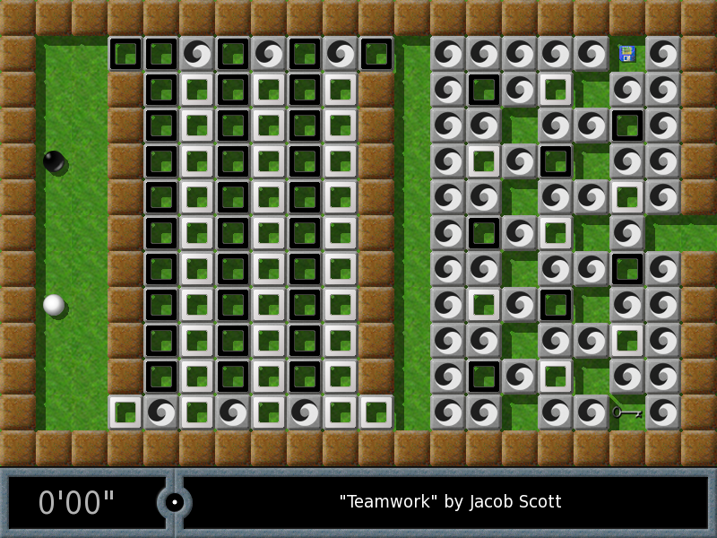
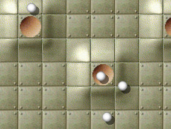

This manual describes how to install and play Enigma, and corresponds to Enigma version 1.20.
Copyright © 2003, 2004, 2005, 2006, 2007, 2008, 2009, 2010, 2011, 2012, 2013 Daniel Heck (dheck@gmx.de) and other contributors
Copying and distribution of this file, with or without modification, are permitted in any medium without royalty provided the copyright notice and this notice are preserved.
| 1. Introduction | Getting started with Enigma | |
| 2. The Game | How to play Enigma | |
| 3. Some Game Objects | Description of some game objects | |
| 4. Advanced Topics | Further features and administration | |
| 5. Spoilers | Tips for some difficult levels | |
| 6. Credits | Credits and ‘Thank You’s | |
| 1.1 About Enigma | Some facts about Enigma | |
| 1.2 Installation | Getting and installing Enigma | |
| 1.3 Distributing Enigma | Give copies of Enigma to your friends! |
To say that Enigma is a puzzle game is an understatement. Enigma is really a huge collection of puzzle games, and each of its 550 unique levels challenge the intelligence, dexterity and sheer willpower of its players anew. Enigma is simple to learn, challenging to play, but hard to master. Players of almost any age can enjoy it. It contains hundreds of levels. And if that isn’t enough, it’s also completely free. If you like puzzle games and have a steady hand, Enigma will probably keep you busy for hours on end.
The object of the game is to find and uncover pairs of identically colored ‘Oxyd’ stones. Simple? Yes. Easy? Certainly not! Hidden traps, vast mazes, laser beams, and most of all, countless hairy puzzles usually block your direct way to the Oxyd stones. Enigma’s game objects (and there are hundreds of them, lest you get bored) interact in many unexpected ways, and since many of them follow the laws of physics (Enigma’s special laws of physics, that is), controlling them with the mouse isn’t always trivial ...
The original goal of the Enigma project was to keep the spirit of the Oxyd game series alive, after its publisher decided to leave the gaming business in 2002. Fans of this famous game will experience déjà-vu. However, over the years, Enigma has absorbed ideas from countless other popular games, and added its own unique twists to each of them.
Enigma is available for Windows, Mac OS X, and most flavors of Linux and other modern Unices. It has been translated into many languages. Even this manual is available in several languages.
The official homepage for Enigma contains screen shots, downloads, the latest news, and the most recent version of this manual. You can always reach the Enigma developers by email at enigma-devel@nongnu.org.
Enigma is free software, i.e., we encourage you to copy it and give it to your friends (see section Distributing Enigma), or to send them a link to our download page. Enigma is developed by a small group of volunteers, all of us working in our free time. If you like the game, please send us an email. It’s probably the only reward we will ever get in return for the countless hours we have put into developing this game.
You can download the latest version of Enigma from Enigma’s Download Page. This page contains packages for the following operating systems:
The Windows version of Enigma is distributed as a self-installing executable. Simply download and run the provided ‘.exe’ file.
Binary packages exist for some popular Linux distributions like SUSE, Redhat, or Debian. For other Unix-like operating systems, the easiest solution is usually building Enigma from source.
No installation is necessary for the OS X version, simply execute the ‘.dmg’ or ‘.tar.gz’ file.
The download page usually contains more detailed and up-to-date information. If you cannot get Enigma to work on your computer, feel free to ask for help on the Enigma mailing list (enigma-devel@nongnu.org).
Enigma is free software and you may distribute it under the terms of the GNU General Public License (GPL). This license comes with every Enigma release (either in file ‘COPYING’ or in file ‘COPYING.txt’). If all you want to do is play Enigma, you don’t really need to read all that legalese (you probably wouldn’t anyway). For you, the license basically says: Play Enigma as much as you want, as long as you want, and be sure to give it to all your friends!
If you want to modify Enigma or contribute to its further development, please do read the license, if only this one time in your life. The GPL insures that Enigma will remain free software in the future. In particular, if you modify Enigma or distribute a modified version, you may not deny anyone else the right to use, modify, and distribute Enigma or its derivatives.
The preceding two paragraphs are no substitute for the real license, but a summary of its main traits in plain English. Please consult the GPL or ask if you are unsure or if you need to know more details.
| 2.1 Getting Started | Navigating the menus and starting a game | |
| 2.2 Rules of the Game | How to play Enigma | |
| 2.3 Controls | Keyboard and mouse commands |
After starting Enigma, you will see the main menu, from where you can start a new game, set some options, or leave the game if you’ve had enough. The following sections will give you a quick tour of the level menu and the options menu; everything else is hopefully self-explanatory. Many menus provide an online help; simply press the <F1> key.
| 2.1.1 The Level Menu | Choose the next level | |
| 2.1.2 The Level Pack Menu | Select a level pack | |
| 2.1.3 Game Options | Adapt Enigma to your preferences | |
| 2.1.4 The Level Inspector | Detailed information about a level |
Pressing “Start Game” in the main menu leads you to the level menu, which looks something like this:
The screen consists of three areas: The top area contains information about the currently-selected level and the current level pack; the middle area displays an overview of the available levels, and at the bottom is a row of buttons.
You can move around the list of levels using either the small arrow buttons to the right, or using the arrows keys. To start a new game, simply click on the preview image of the landscape you want to play or press <RET>.
Enigma has two difficulty settings: “easy” and “normal.” To switch between easy and normal difficulty, click the center button in the bottom row. Switch to the icon displaying a silver medal with a feather if you prefer simpler levels, or to the gold medal for the normal, more difficult, game mode.
Not all levels are available in a simplified version; those that are available are marked with a feather (if you did not solve it yet), or with a silver medal in the upper left corner of their preview image.
You can jump to the next level either by pressing <F5> or by pushing the <>>|> button in the bottom row. The meaning of “next” in the previous sentence depends on the mode that you selected with the leftmost icon button in the bottom row.
A small red triangle with an exclamation mark in the upper left corner may label the level. This sign should inform you that the level was updated since you last solved it. You will probably see this only when you update Enigma to a newer version.
You can navigate the level menu with the following keys:
Return to the last menu
Display help
Move to next level, identical to the <>>|> button
Change selected level
Play selected level
Move to next level pack
Move to previous level pack
Enigma comes with many levels. Many, many levels, in fact. To keep things orderly, we have organized them into “level packs”. And because every release of Enigma added more levels, we even had to organize the level packs themselves into “groups”. But luckily, this is all a lot easier than it sounds.
To select the level pack, you have to enter the “Level Pack” menu, which is accessible from the main menu or the level menu.
This menu shows the groups in the left column and the level packs of the selected group in the other columns to the right. The official groups that ship with Enigma are the following:
A left click selects a group or a level pack.
For descriptions of further features of level packs, see User Level Packs.
The options menu allows you to adapt Enigma to your preferences.
Choose the language for the menus and (if available) for the in-level documents.
Toggles between full screen and windowed display. You can also use Alt-<RET> to do this, even when you are not in the options menu. Note: On some systems you must return to the main menu to switch from window to full screen or vice versa.
This button lets you change the video mode used by Enigma. Enigma does not switch the video mode immediately, but waits until you return to the main menu.
If necessary, adjust the brightness of the display here.
Determines how quickly your marble accelerates when you move the mouse. You can use the left and right arrow keys to change the mouse speed during the game.
The volume of sound effects during the game.
This button lets you choose the set of sound effects Enigma uses during the game. If you use Enigma with the original Oxyd data files, this options lets you use the original Oxyd sounds in all levels.
The volume of the background music in the menu.
Toggle between “normal” stereo, “reversed” stereo, and mono sound.
If set to ‘Auto’, Enigma will try to download new rating data from time to time. This will update public ratings, world records, par scores, etc. See section Registering Scores.
Enter your name or the alias that you want attached to your records if you upload the enigma.score. See section Registering Scores.
The path where Enigma stores all your user data. Refer to the Reference Manual for more information.
The path where Enigma stores all your user image data. Refer to the Reference Manual for more information.
To view more detailed information about a level, you can call the level inspector. Just right or control click on the level’s preview image in the level menu.
You can compare your scores to the world record, the par, the level author’s score. Some statistics about how many players solved a level are even provided.
Besides all the other information that is described in detail in the Reference Manual, you can enter a small annotation to a level and can rate the level.
Please note, the annotation text field may allow you to enter only ASCII characters, depending on the system in which Enigma is running.
The rating is your personal impression of the level. ‘-’ stands for no opinion. 0 - for very bad, 5 - for average, 10 - for best of the best. The ratings will be sent back with your scores (see section Registering Scores).
Last but not least, you can use the Level Inspector to view screen shots that you made while playing a level (see section Controls).
| 2.2.1 Normal landscapes | ||
| 2.2.2 Two-player landscapes | ||
| 2.2.3 Meditation landscapes |
The basic idea behind Enigma is simple: In most levels you control a small black marble and have to find and “open” matching pairs of so-called Oxyd stones. Closed Oxyd stones look like this (there are four different variants, but they all behave the same):
When you touch an Oxyd stone with your marble, it opens and reveals a color symbol. There are two Oxyd stones with the same symbol in every landscape. You must touch two matching stones in succession to open them permanently; if the symbols don’t match, the first Oxyd stone closes again. To finish a landscape, you have to find and open all pairs of Oxyd stones. In the following image you see a pair of green Oxyd stones that is already open. The question mark inside the blue Oxyd stone indicates that the second blue symbol is still hidden somewhere.
By the way: if you have not already done so, now is a good time to start Enigma and play the first couple of levels!
You can pick up objects on the floor by rolling over them. The inventory at the bottom of the screen displays the list of items in your possession. At the beginning of a new game, you will be equipped with nothing but two spare marbles. The following picture shows an inventory containing a shovel, a piece of paper, two bars of dynamite, your extra lives, and an umbrella:
You can activate the leftmost object by pressing the left mouse button: It will either drop to the floor or perform some action. Dynamite, for example, starts to burn when you drop it, and springs make your marble jump. Press the right mouse button or use the mouse wheel to reorder the objects in your inventory.
If, for some reason, you do not want to pick up items, hold down any mouse button while moving around. You may find this useful in a few situations.
You can move many stones if you push them hard enough. One of the most useful movable stones is the wooden stone, which you can use to build bridges across water and abysses. This image shows how to build a bridge by dumping wooden stones into the water:
Game objects interact with each other in surprising ways: You can use laser beams and movable stones to transform objects lying on the floor, for example. And many stones behave differently if you hit them with a specific object in the first slot of your inventory (the magic wand being the best-known object in this category).
Last but not least: Don’t feel discouraged by the apparent complexity of the game! The behavior of most objects will become clear in due course. Some of the obscurer objects are explained in Some Game Objects.
Some bad news first: Enigma does not yet support Internet or network games. In this respect, the two-player landscapes are really single-player landscapes where you can switch between two marbles: the black one you’re already used to, and an additional white marble:
You can tell whether you’re on a two-player level by the little Yin-Yang symbol in your inventory. Activating this object switches your control from the black to the white marble and vice versa.
In the so-called meditation landscapes, your job is quite different: Instead of finding matching Oxyd stones, you must put a number of small white marbles into pits on the floor. You finish the level as soon as every marble rests in its own pit.
Be careful though: All marbles move together, and a sudden mouse movement can easily push some of them out of their pits. Meditation landscapes usually require a very steady hand and a lot of patience (which is, incidentally, why they are called meditation landscapes!).
Here is a list of controls you use during the game. (You need not memorize it now; you can always display this list during the game by pressing the <F1> key.)
Use first item in inventory
Rotate inventory items
Display game menu
Quit game immediately
Display help screen
Kill the current marble
Restart the current level
Move to the next level
Move to the next unsolved level
Take a screen shot
Decrease mouse speed
Increase mouse speed
Toggle between full screen and windowed display (this feature doesn’t work on all systems immediately)
Return to the level menu immediately
You will see dozens of different game objects in Enigma’s levels. We just want to describe a few assorted sets of them here. If you’re new to Enigma, you might want to start with the levels in the Tutorial Pack. Just start Enigma, choose “Level Pack”, then the “Enigma” button in the upper-left corner, then “Tutorial” on the right. Start with the first level, “Oxyd Stones 1”. The tutorial will show you the most important objects and ideas, and some of the easier levels of Enigma.
| 3.1 Items | ||
| 3.2 Stones |
| 3.1.1 Explosives | Dynamite and bombs | |
| 3.1.2 Umbrellas | ||
| 3.1.3 Flags | Setting the respawn point |
You can come across three types of explosives in Enigma. The most harmless is the stick of dynamite. It doesn’t do much damage to floor tiles or neighboring stones when it explodes, but it is useful for destroying certain stones and for igniting nearby bombs.
Black bombs are powerful enough to destroy most floor tiles and many other objects. For most purposes, they are the explosive of choice. White bombs have the explosive power of five black bombs–get away quickly if you see them burn!
Use umbrellas to make your marble invulnerable for a short time (ten seconds to be exact). When you activate an umbrella, a white halo will appear around your marble for as long as the protection lasts. If the halo starts to blink, you have three seconds to move your marble to a safe place.
Flags are primarily useful on long and dangerous journeys. If your marble is destroyed, the new marble will appear where you last dropped a flag, instead of at the beginning of the level. There are two types of flags: a black one and a white one, which set the starting point of the black and the white marble respectively.
| 3.2.1 Lethal Stones | ||
| 3.2.2 Swap Stones | ||
| 3.2.3 Mirrors | ||
| 3.2.4 Oneway Stones | ||
| 3.2.5 Shogun Stones | ||
| 3.2.6 Bolder Stones | ||
| 3.2.7 Puzzle Stones | ||
| 3.2.8 Mail Stones | ||
| 3.2.9 Chess Stones |
You should avoid two kinds of stones at all costs, at least if you do not have an umbrella to protect your precious marble.
The skull stone is as unhealthy as it looks; touch it and perish. Really, you have been warned. An even more cunning variant is invisible; don’t forget your magic glasses.
The black knight often guards important passageways, and he’s generally not in the mood to let you pass. Bring a good argument to “convince” him.
Swap stones do not simply move to an adjacent (empty) field when being pushed; instead, they change places with the stone you push them into. Consequently, the only way to move a swap stone from one place to another is to repeatedly interchange it with other “normal” stones.
You can deflect laser beams with the help of mirror stones. Enigma has two types of mirrors: plane mirrors and triangular mirrors. A plane mirror behaves like an ordinary mirror: It reflects an incoming laser beam if it is perpendicular to the mirror, and deflects it to the left or right if it hits the mirror at a 45-degree angle.
Triangular mirrors are a little more tricky: The three faces behave like regular mirrors, either reflecting or deflecting an incident beam. But a beam that falls on the tip of the triangle is split into two outgoing beams that travel in opposite directions.
Additionally, both types of mirrors can be semitransparent or movable. Semitransparent mirrors deflect part of the incoming beam just like their opaque siblings do, but part of the beam continues unchanged. Movable mirrors are mounted on a light gray stone, immovable mirrors on a dark gray stone.
You can turn mirrors by touching them lightly with your marble. But be careful with mirrors that are already inside a laser beam, it is easy to inadvertently destroy your marble!
You can pass these stones only in one direction. Whole labyrinths can be build out of them, but mostly they force you to complete one part of the level before passing to the next one.
You have problems with a oneway stone that blocks your way? Maybe a magic item is able to help you ...
In some levels you will encounter blinking blue dots on the floor. You can activate them with the right combination of shogun stones, whereupon they usually do something useful, like opening doors or creating bridges.
You can activate a small blinking dot by moving a shogun stone with a small hole on top of it. To activate the bigger dots a single shogun stone is not sufficient. Instead, you must properly stack two or three shogun stones by pushing stones with small holes into stones with larger holes. If you want to activate a medium-sized dot, for example, you first must place a shogun stone with a medium-sized hole on it, then push a small-holed stone into the bigger one.
Bolder stones move in the direction shown by the arrow on them until they bump into another stone. Maybe they block your way, and you have to get rid of them someway. However, never, never stand in front of one, as it shatters your marble instantly, when the bolder stone overruns it!
Still, you might make use of them, too, since they are able to open oxyds, when they bump into them. And you can redirect the bolder stones in several ways ...
Puzzle stones derive their name from the fact you can put individual stones together like the pieces of a puzzle. Puzzle stones have sockets on some or all of their four sides, which can attach to sockets on adjacent stones. Once linked up, groups of puzzle stones move as a unit. You can use these blocks, for example, to build bridges across an abyss or water.
When you hit them with a magic wand, puzzle stones behave differently. If the block of puzzle stones is fully connected (i.e., it has no open sockets), the block immediately starts to explode, stone by stone. If the block is not fully connected, the stones in the row or column that you hit shift by one place, either horizontally or vertically.
There’s a rare variant of the common puzzle stone that behaves a little differently. Its main habitat are the levels of Oxyd 1, and it’s recognizable by the color of its pipes, which is orange instead of the usual blue. You cannot move these puzzle stones as a unit. They behave like the blue puzzle stones do when you hit them with a magic wand: The block explodes if it’s fully connected, or you shuffle the touched row or column of the block.
You can use mail stones to send items from your inventory to some inaccessible place in the landscape. When you roll against a mail stone, the first object in your inventory gets “mailed”, removed and put at the end of the pipeline attached to the mail stone. In most cases, you will have to build this pipeline yourself, for example by “mailing” individual pipe objects.
Be careful: the mail stone does not work if an object is already at the end of the pipeline. It’s very easy to inadvertently send objects that afterwards block the pipeline, so be careful!
Like many other stones, the chess stones are movable as well. But in contrast to all other stones, they move in the way of a chess knight, i.e. two squares in one direction and one square in another. Always hit a chess stone under an angle – it will then move two squares in the direction of your hit and one square in the direction given by this angle. It’s quite difficult to hit them correctly, and needs some practice, just as riding!
The black chess stone can only be moved by a black marble, the white chess stone by a white marble. The name (chess stone instead of knight stone or horse stone) results from the simple fact that there already are gaming objects named knights and horses.
| 4.1 User Level Packs | History, Search Results and Auto | |
| 4.2 Backup | What to backup for security | |
| 4.3 Registering Scores | Let the world know your success | |
| 4.4 Updating Enigma | Keeping scores and levels on an update | |
| 4.5 User Sound Sets | How to install sound sets from the internet |
The Level Pack Menu provides some additional features. The ‘User’ group has three level packs that are initially empty: ‘Auto Folder’, ‘History’ and ‘Search Result’.
You can search in the pool of levels by clicking on the ‘Search’ button in the level pack menu. Just move the mouse to the text field and enter the string to search. You may search within author, title and file name. The search is case insensitve. For example, you can search for the string “jump”. Enigma provides the resulting levels as a level pack called “Search Results”.
Enigma automatically updates the level pack ‘History’ with every level you play. This may be useful if you look for a level you played last week, but do not remember the keywords to search for.
The ‘Auto Folder’ is a level pack that you can use to add new levels, for example levels you download from the Internet or write yourself. The folder in which you should store the levels is ‘levels/auto’ on the ‘User Path’ as shown in Game Options. Enigma automatically finds and loads levels in this folder when it starts.
Enigma provides many more useful features beyond the scope of this manual. Please read the Reference Manual for more details.
If you are afraid of losing all your scores due to a hard drive failure, or if you want to transfer your scores from one computer to another, knowing how to back up Enigma’s status information is helpful. To do that, first look up ‘User Path’ from Enigma’s Game Options menu. You can simply back up that folder—the important files are ‘enigma.score’ and ‘state.xml’.
To register your scores, you need to send us the ‘enigma.score’ file located at the folder ‘User Path’. Please look at the project homepage for more detailed instructions.
To automatically download the updated world record score lists, you just need to enable the option ‘Ratings Update’.
If you did not customize your old Enigma version, simply deinstall the old version and install the new one. That is all you have to do, since Enigma will update your scores automatically.
Just in case you added levels to the Enigma installation directories you have to backup them prior deinstallation. After that you can safely deinstall the old version and install the new one.
Enigma automatically converts the old score file to the new score format. You can remove the old score after your first successful run of Enigma 1.00. The old score file is called ‘~/.enigmarc2’ for systems with a ‘HOME’ environment variable or ‘.../Application Data/enigmarc.lua2’ for HOMEless Windows systems. If you want to read levels that you saved from the old installation, please read the Reference Manual.
A sound set is the sum of all sounds that appear in the game and the menus. Enigma 1.01 and above allows you to switch between the default sound set and sound sets you downloaded from the internet or created yourself.
To install a downloaded sound set, close Enigma and create a subdirectory named ‘soundsets’ in your ‘User Path’. Unpack the downloaded sound set if neccessary. Its files should all be inside one directory with the name of the soundset, e.g. ‘MyGreatSounds15’. Move this directory into the ‘soundsets’ directory. Check that the ‘soundset.lua’ file is now located at ‘soundsets/MyGreatSounds15/soundset.lua’. Start Enigma and open the ‘Options’ menu. Click on the ‘Sound set’ button until the new sound set appears. Switch back to ‘Default’ or ‘Enigma’ to activate the old sound set again.
To uninstall a sound set, close Enigma and remove the directory which contains the obsolete sound set (e.g. ‘MyGreatSounds15’). You need not remove the ‘soundsets’ directory.
Please find a detailed explanation on how to create sound sets yourself in the Reference Manual and in the sample file ‘soundset.lua’ which is located in the same directory as the Reference Manual. You can download sound sets that other users submitted to us from ‘http://svn.berlios.de/svnroot/repos/enigma-game/add-ons/soundsets’.
This chapter contains hints for some of the difficult levels. We strongly advise you not to read the spoilers unless you are completely stuck. Some levels are intentionally difficult, and even veteran Enigma players need hours to solve them. Some levels are easier to solve in easy game mode (see section The Level Menu).
| 5.1 Walkthrough for Advanced Tutorial | Walkthrough for ‘Advanced Tutorial’ | |
| 5.2 Hints for Several Levels |
The landscapes in the “Tutorial” level pack are supposed to be easy, except for the last one, which is not ... Jacob Scott contributed this section of the manual.
This walkthrough is for my level “Advanced Tutorial” in the “Tutorial” level pack (to change level packs, click on “Level Pack” at the bottom-left of the screen and select a level pack). You should read all the documents in a room as soon as possible while you are playing.
The final goal for this level, as for most Enigma levels, is to find and hit all the oxyd stones with your black ball. When you hit an oxyd stone, it opens and shows a color. If you hit two oxyd stones of the same color in a row, they will both stay open. Once you’ve matched up all pairs of oxyd stones in a level, you have completed the level.
The “Advanced Tutorial” level contains about twenty rooms, organized into three separate areas. In the first area, you will encounter some of the basic blocks and floor types you will see in other Enigma levels, and solve a couple of simple puzzles. The second area is more challenging and will introduce you to a useful technique in out-thinking an active enemy. The third and final area leads you to experiment with more advanced interactions between Enigma objects. In this particular level, you will find all of the oxyd stones in a single room at the end of area 3.
You start in a room surrounded by immovable walls except for a gap to the right, some water near the bottom-left, and a closed gate near the top-left.
Room 1: Go through the gap in the wall to the right.
Room 2: Simply avoid the blocks with pictures of skulls on them.
Room 3: Push the four wooden blocks into the water in a single row to create a bridge to the opposite bank. Now hit the blackish blocks to the right. Move the tan blocks out of the way (maybe to the left), and bridge a way to the right with the two wooden blocks.
Room 4: Go close to the “top”. When it begins to chase you, lead it to the left and around the blocks in the center of the room. Once the top is far enough away from the entrance to the next room, run through.
Room 5: The only dangers here are the skulls near the bottom of the room. The first floor type is metal—this floor is similar to the “leaves” floor that you have been traveling on so far. The next floor type is “red”—it is somewhat difficult to slow down or speed up on this floor. The third floor type is ice—there is little friction on this floor. The last floor type is space—there is no friction here; you can’t change velocity (speed or direction) when you are on this type of floor.
Room 6: Simply go over the slopes. Then exit to the left by passing over the “inverse” floor—when you are on this type of floor and you push the mouse (or similar controller) in one direction, the ball speeds up in the opposite direction. (If you are having trouble here, try turning your mouse around 180 degrees.)
Room 7: Try to get the extra ball by putting the movable block on the lower trigger (gray plate). First hit it up one square, then left six squares. Next hit it five squares down and two squares to the right. Finally hit it one square up and one square to the left. Take the extra ball, then put the block on the other trigger to open the gate in the left wall of the room.
Room 8: Take the dynamite (you will have to go on the ice) and drop it in front of the yellow blocks to blow them up and get past. The spade is unnecessary in this level, but you should still experiment with it.
Room 9: Hit the lowest movable block to the left. Now the boulders, trying to go to the right, are blocking your path. Hit the rightmost movable block (to the left or to the right) to let the boulders pass. Take the magic wand (don’t accidentally hit any boulders when the magic wand is in the front of your inventory) and hit the movable block above the water, down. Now go back to the right of the room, put the magic wand in the front of your inventory, and hit the top three boulders of the long column (try not to get run over by any boulders). Hit the leftmost movable block to the left and go into the next room.
Room 10: Hit the switch. Now hit the two tan blocks up, one square each. Hit the middle (from top to bottom) wooden block to the left, and the wooden block that used to be right above it, up into the water. Hit the rest of the blocks into the water in the same column (try not to drown). Now hit the window (the blue line) with high speed. Take the ball and cross over the bridge into the first room. From there go through the open gate.
In area two, you will encounter a rotor, which is an active enemy of your black ball. Various rotors can act slightly differently, but they are never very smart. The way to get past it is to trick it into doing what you want it to do, while keeping yourself out of danger.
Look around this area (but don’t hit the movable block yet). You need to get through the three closed gates at the top of this area.
First gate: Hit the white ball to the left (don’t accidentally go through the black one-way block) to free it (this may require a few tries). Take the spoon, then hit the white ball through the white one-way block hard enough so that it doesn’t get stuck. Now go through the black one-way block and hit the white ball through the passageway. Hit the white ball hard enough that it goes through the next white one-way block and doesn’t get stuck beneath it. Once the white ball is through, use the spoon; you restart at the beginning of the level and are no longer trapped. Go back up through the gate—the first gate near the top of this room is now open.
Second gate: Hit the movable block in the rightmost room of this area to the right, and run. A document with useful information should appear in the gate connecting area one and area two. Bring the rotor (by making it chase you, like you did with the top) to above the wall to the right of the gate between the first two areas. Run through the gate and go over the bridge to the room below you. Hit the switch to close the gate and return to the room where you initially started. You will no longer be able to see the rotor (it won’t be in the room where you will be) but if you look carefully, you will be able to see where it is. The goal here is to get the rotor to go to a trigger and open a gate for you, without exposing yourself to any danger. Get the rotor to follow you from the top-right to the top-left of this room. It should be pushed to the left by some slopes. Bring the rotor down on the left until it will not continue and you hear the sound of a trigger being pushed. Hit the switch to open the gate and return to area two; the second gate should be open.
Third gate: Simply hit the movable block that hid the rotor to the trigger in the room where it started. Return to the room to your left; the third gate should be open. Go through the three open gates.
In area three you need to explore the interactions between particular Enigma objects. Here you will find lasers, mirrors, and coins. You will need to solve a simple laser-and-mirror puzzle to get a laser to hit a particular stone, which will open a bridge to the next room. To get past the next few rooms, you will need to create some new objects by hitting existing objects with the laser beam.
In the first part of this area there are three mirrors and a laser with a switch.
Room 1: You need to get the laser to hit the black stone. Hit the bottom-left mirror down one square and orient it so that it looks like this “\” by hitting it slowly (it should be thirty squares directly to the left of the laser). Hit the top-left mirror eight squares to the left, one square down, and orient it so that it looks like this: “/” (it should be four squares directly above the previous mirror). Hit the top-right mirror two squares up, then three squares to the right (it should be twenty-two squares directly to the right of the previous mirror and one square below the black stone). Put this mirror in the “/” orientation. Now hit the switch to turn on the laser (don’t get hit by or roll over the laser beam). Once it is completely up, go over the bridge to your right.
Room 2: Take some coins and return to the previous room. By turning off and on the laser, hit one of the coins with the laser beam. Take the object produced (an umbrella), repeat the process, and take the second umbrella. Now drop one of the coins next to a mirror and push the mirror over it. Hit this coin with a value of five with the laser beam to produce a hammer. Hit the hammer with the laser beam (by turning the laser off and on) to produce a sword. If you want some more balls, you can hit mirrors over coins twice and hit the coins of increased value (to ten, the highest possible) with the laser. To return to the room with the knights, return the mirrors to their initial positions, remove all objects blocking the laser, and hit the switch. Now use the right mouse button or the “tab” key to get the sword in the front (left) of your inventory. Hit some of the knights (four times each) to get past.
Room 3: Use an umbrella and travel over the abyss to the room below you, then into the room to your right. If the halo surrounding you begins to blink, use another umbrella.
Room 4: Simply match the oxyd stones by hitting oxyds of the same colors as the activated oxyd stones (one at a time). Don’t hit the quake stones (the black stones). You win!
The message near the upper-right corner contains an important hint.
Put the first shogun stone in the upper left corner, and the second one above the rightmost shogun dot.
Make use of the wooden stones if you have lost your way.
Ever thought of turning your mouse upside-down???
Remember? This was the first level in the original Sokoban … So it can’t be that hard!
Push two of the mirrors to the top and one to the bottom. By moving the mirrors around and by aiming carefully, you can hit all the Oxyd stones with a laser beam.
One of the blue dots behaves differently. Make use of that fact!
Align the marbles horizontally.
Knock the walls.
You opened all the doors and still can’t get through? You must have missed something!
Ever heard of the three-body problem?
Learn from “Easy Shifting ...”.
Learn from “Running Rings”.
First, find the floppy disk and the magic wand; you will need them. Second, always keep the floppy and the wand with you. Third, some stones look alike but don’t behave alike.
Jam the laser.
It’s time to learn a few things about object transformations. Experiment!
Or rather: Question of Seed???
Find the magic wand first!
Hide dangerous tools from children.
Step carefully in the ladder.
Is there an echo?
... or use your favorite encyclopedia if you don’t recall the right number.
The message in the left room tells you how to arrange the blocks on the first rows of triggers. From there, use the color codes indicated in the left room.
Be grateful!
Cannot get out of the first screen? Focus on the small blinking dot first. Cannot find the last Oxyd stone? Activate three of the large blinking dots on the first screen and the small one on the third screen.
Afraid to die?
One swap up – One swap down – Puzzle to the right – then keep on!
Three little Inuit – Wand’ring on an ice field – couldn’t find their little igloos – deep under the snow shield.
You can’t solve this level without a broken ego.
Decoys all over the place … this is a meditation landscape.
There’s a spring hidden under a mirror.
It’s easier with a hammer!
Carefully flooding certain areas can be useful. Do not leave the first room without activating the lower switch. The many switches on the lower left all do the same.
Jam the lasers in case you’re not fast enough.
Enter the bank through cracks in the floor.
Learn from “Pharaoh’s Tombs”.
Some people jump out of the window when there’s fire – do it the other way around.
Too many wooden blocks? How could you remove one?
The cannonball also opens oxyds.
The trigger hurts you? Destroy it!
It processes.
Find a way to shatter.
Does WNSE remind you of something?
Admitted, this level is evil. There’s a seed hidden near your starting point.
This one is tricky. Ignite a bomb near the wooden stones.
Not enough of a pirate to master the this level? There is a different, easier route.
First analyze one-hundreds.
Hit and race.
When you see the cross, what should the array show next?
There’s a better hint somewhere in this manual.
There’s a better hint hidden under the oxyd.
Floor burns faster.
Don’t let anything touch the borders.
The laser changes more than items.
Sacrifice to the volcano.
Play it to the date.
Blast the corner.
Bomb the bomb stones.
Make sure you always have access to the room with the switch on the floor. Then search for the second screen with the “hidden treasure”.
| 6.1 Main developers | ||
| 6.2 Special Thanks | ||
| 6.3 Contributors | ||
| 6.4 Utilized Software |
Level admininstration and design, homepage, overall invaluable additions
Level design, graphics
Level design, graphics, programming
Main developer, graphics, documentation
XML, Gui, portability, core programming, documentation, homepage, score evaluation
Programming, level administration, level design, documentation, homepage
Level design, programming
Level design
Level design
Level design and special Oxyd expertise
Programming, level design
Mac OS X port, some programming, graphics
Forum mag-heut.net administration, Level design
Graphics second generation
Oxyd file format reverse engineering, Oxydlib
Original game idea–Thanks!
Debian/Ubuntu packages, level design
Menu music (Pentagonal Dreams)
Many Sokoban levels from http://users.bentonrea.com/~sasquatch/sokoban
Music second generation, Proof reading
For various smaller contributions, thanks go to:
This document was generated by raoul on March 29, 2013 using texi2html 1.82.